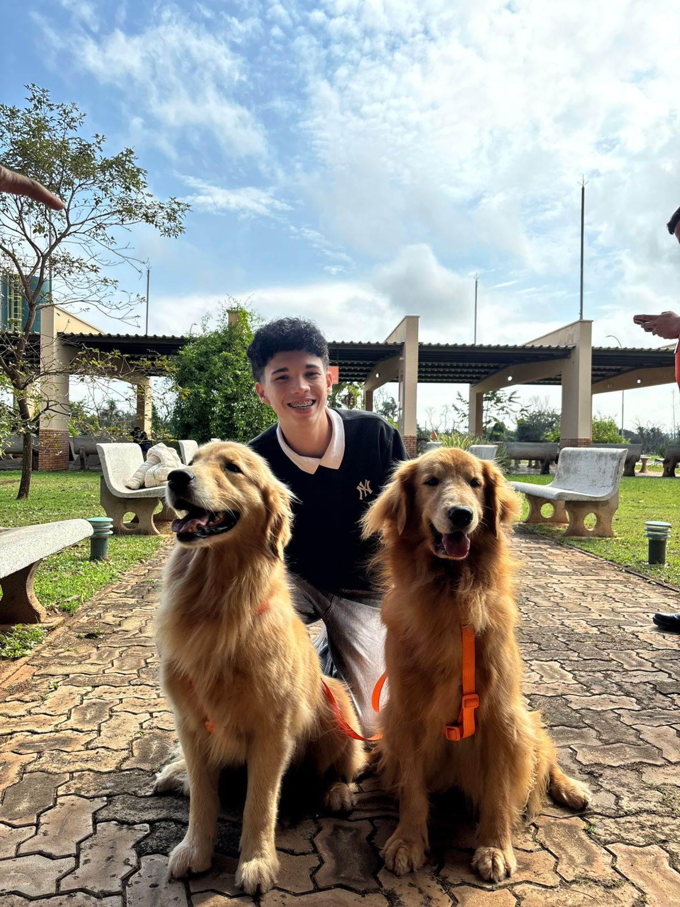

CONTROLE DE ARMÁRIOS
Organizaçãoem um só lugar.
Sistemas de gestão · Dados · Automação

Sou estudante de Análise e Desenvolvimento de Sistemas. Neste portfólio, reúno projetos de gestão de armários, identificação de pets e acompanhamento da produção, além de trabalhos com automação e dados.
"Legado não se explica. Se constrói."
CONTROLE DE ARMÁRIOS
OrganizaçãoUma solução digital para centralizar informações, acompanhar ocupações e organizar movimentações em uma única plataforma.
Identificação inteligente e conexão entre pets e seus tutores.
Sistema de acompanhamento e fechamento da produção, com consulta de OPs, informações de produção e controle de perdas.